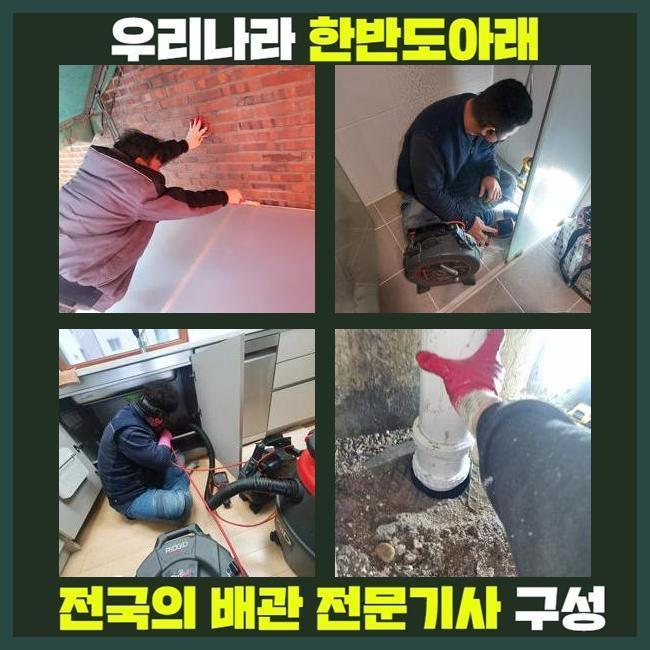
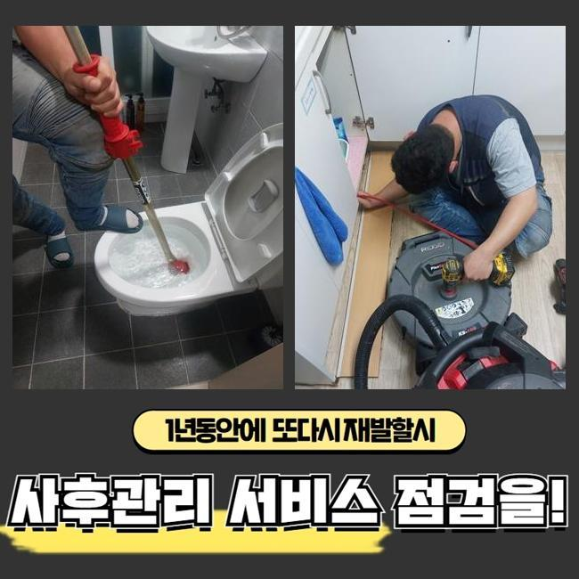
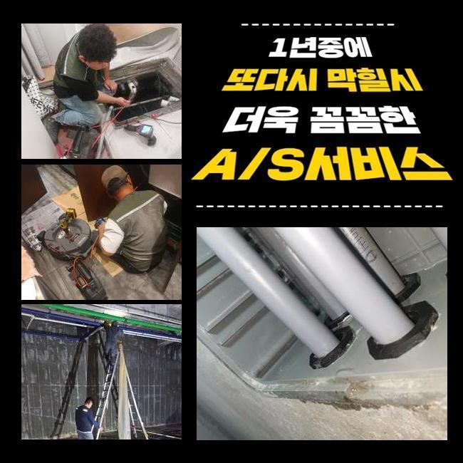
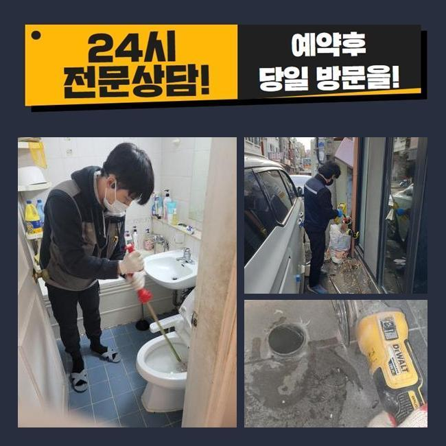
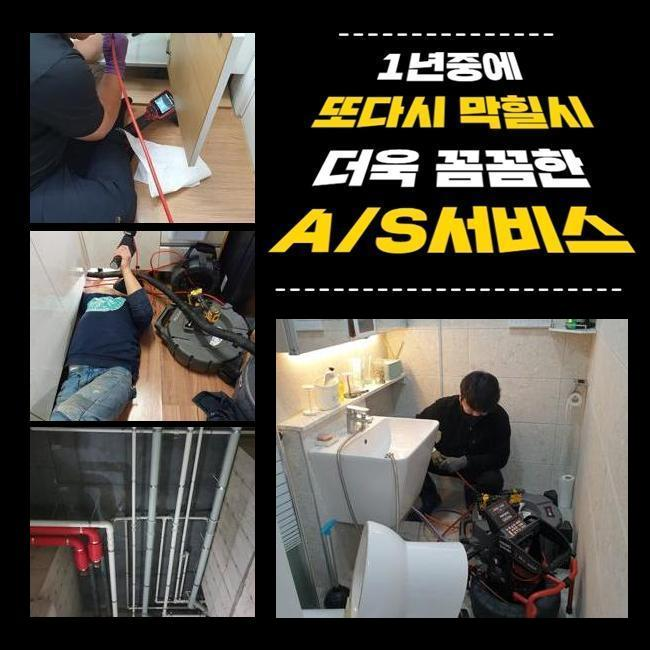
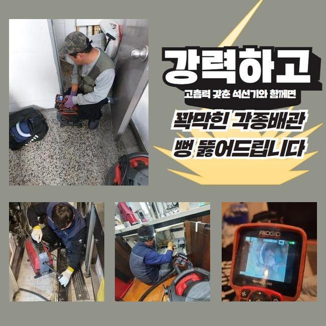

🏠 남동구 서창동화장실바닥막힘 남촌도림동 하수구뚫어주는업체 설비공사
용인 남동 하수구막힘 전문 시공 후기

📋 작업 개요
- 위치: 용인 남동, 남동, 용인
- 서비스 유형: 하수구막힘, 배관막힘, 역류해결, 뚫는업체, 배관청소, 설비공사
- 작업 일시: 2024. 12. 26. 11:29
- 업체명: 하수구수사대 (010-5615-2118)
🔍 문제 상황
남동구 서창동화장실바닥막힘 남촌도림동 하수구뚫어주는업체 설비공사
2주전에 하수도가 막혀 스트레스를 받고 계셨던 고객께 전화가 들어왔었는데요
의뢰자께서는 하수설비의 전문지식까진 아니였지만 본인만의 해결책을 답습한 것이였죠
의뢰자분은 캡이나 여타 부품들을 청소시키고 막힌 스팟을 찾아보고자 노력했지만 어느지점이 시작점인지 알기가 힘들어 저희업체에게 의뢰했던 상태였어요
계신 곳에 내방하니 계속적인 자가적인 조치들로 고생하신것이 한눈에 들어왔는데요
고객님 차원에서는 명확한 이유에 대해 알아내기힘든 경우들이 상당합니다
해당 장소에서 이곳저곳을 확인해봤더니 괄목할만한 요소는 없었습니다
의뢰자분은 바깥에 위치한 관로에서 원인들이 자리했을 여지가 있을지모르겠다고 생각하게 되었어요
더군다나 식물과 나무가 많다면 뿌리등이 배수관으로 말려 들어가거나 잔해물이 흘러들어갈 확률이 있어요
다양한 요소로 인하여 중앙관로가 막히게될 수 있어요

🔎 원인 분석
💡 전문가 진단: 정밀 진단 장비를 사용하여 슬러지의 고착 여부를 판명하고 타격/세척 작업을 실시했습니다.
고객님에게 합리적으로 예견되는 이유들을 설명하고 외부라인을 진단해봐야할 것을 설명했죠
의뢰자께서도 해당 사항을 들으시고 중앙관로의 검수에 동의했습니다
수리를 착수하기 이전에 여러 준비들을 거쳤어요
배수장애의 이유들은 특정이 안돼요
바깥부분에 배수길이 노출되어있을땐 흙이라던가 근처로부터 유입된 이물이 하수관으로 누적되기 시작해요
바깥쪽에 비가 내릴때 외부에 위치한 설비의 상태들을 등한시한다면 문제들은 갑자기 생길거에요
또한, 나무의 지면 밑에서부터 들어가는 경우들도 자주 일어나요
배수관을 찌르거나 심할땐 균열을 생성하는 문제로도 발생케하죠
위와같은 문제에선 물빠짐이 원활치못해 2차적인 피해들이 생겨버립니다
그리고 내구성이 떨어져있다거나 손상된 상태에서도 흐름들이 이뤄질 수가 없어서 막히는 사태가 발발합니다

🔧 작업 과정
매립시기가 꽤 지나 배수관이 약해지면 이물이 불어나는 기반이 갖춰져요
끝으로 대다수 배수장애의 주 원인들은 때에 맞춘 관리책 실시를 안하기 때문이에요
시기적절하게 체크해주지않으면, 작은 잔재들이 쌓이면서 막혀버리게 되는 상황들이 심해질거에요
그리하여 외부라인을 그때그때 점검하고 청소시키는게 앞서서 조치하는 효과있는 방법들이라 할 수 있겠습니다
작용할만한 기조를 인지하시고 앞서서 막는것이 1순위에요
내시경장치로 외측의 관로등의 실태를 체크해봤습니다
내시경장치로 살피니 배수관의 군데군데마다 잔해와 기름슬러지로 범벅이 된 형상이 목격되었어요
이토록 배수관이 막힌다면 물의 배수가 막혀버려 역류까지 발생되므로 올바른 조치들을 실시하는게 중요하겠습니다
상태를 보고 잔재들이 퇴적된 위치를 포인트로 설정하고 청소해보기로 결정했죠
고수압의 방법을 이용하여 강한 힘으로 시설물들을 구석구석 청소했는데요
물줄기들이 슬러지를 내측에서부터 청소하였더니 배수정체의 하수가 흘렀는데요
초반엔 잔재들이 배출됐고 잔해물이 나오게되며 조금씩 원활히 컨디션을 회복했는데요
물이 신속히 빠지는 형상을 체크해보며 의뢰자께서도 전부 보셨습니다
작업들이 완료되고 의뢰인분과 이야기를 나누며 잔해물이 쌓이는 까닭들을 말씀드려보니 고객도 평소 궁금해했던 사안을 물으셨습니다
이렇게 고객의 경우 관리측면의 비중을 이해함과 동시에 추후에도 정기성을 갖춘 점검들의 필요성들에 관해서도 공감했죠
끝내 이물제거 과정이 종료된 후 하수도가 완전히 되돌아오고 의뢰자께서는 배출되는 과정까지 체크했죠


✅ 작업 완료
고객님에게도 결과와 관련한 내용을 일러드리고 지속적으로의 관리방법들까지 일러드렸습니다
정기성을 갖추고 밖의 배관상황들을 점검해본다던가 상황에 따라서는 전문가들의 해결책을 받아보는게 좋을것이라는걸 안내했습니다
결국엔 고객께서 고민을 해결하게되어 안심했습니다
의뢰인분의 수월한 전반적인 통수에 보탬으로 다가설수있게 편하실 때 저희의 전문가들에게 문의하시기 바랍니다



⚠️ 하수구 배관 막힘 예방 및 관리 가이드
- ✅ 머리카락, 비닐, 물티슈 등 물에 분해되지 않는 이물질은 하수구 유입을 절대 금지해 주세요.
- ✅ 하수구 거름망을 씌우고 모여진 이물질은 주기적으로 쓰레기통에 바로 비워주셔야 합니다.
- ✅ 배관 노후가 심할 경우 이물질이 더 쉽게 걸리므로 주기적인 배관 세척(고압세척 등)을 권장합니다.
- ✅ 작업 후 1년 이내 재발 시 하수구수사대에서 무상 A/S 보증 서비스를 제공합니다.
💡 핵심 정리
- 확실한 장비 작업(내시경 점검 및 샤프트 스케일링)으로 원인을 뿌리 뽑습니다.
- 작업 후 1년 이내에 동일한 부위 재발 시 100% 무상 A/S 서비스를 보장합니다.
- 서울 · 경기 · 인천 전 지역에 24시간 언제든 긴급 출동할 수 있도록 항시 대기 중입니다.
❓ 자주 묻는 질문 (FAQ)
🚨 용인 남동 하수구막힘 문제로 고민이신가요?
정확한 원인 진단과 확실한 시공으로 재발 없는 해결을 약속드립니다.
24시간 긴급 출동 | 서울 · 경기 · 인천 전지역 | 1년 내 재발 시 무상 A/S